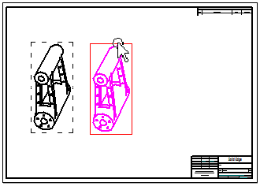
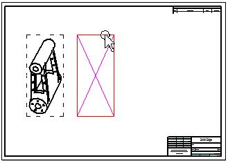

View page (Solid Edge Options dialog box, Draft environment)
- Display as printed
-
Displays the document as paper relative (WYSIWYG) or view relative.
- Window
-
Controls the window display.
- Horizontal scroll bar
-
Displays the horizontal scroll bar of the active window.
- Vertical scroll bar
-
Displays the vertical scroll bar of the active window.
- Sheet tabs
-
Displays the sheet tabs of the active drawing sheet.
- Zoom Tool
-
Sets the behavior of the mouse buttons when the Zoom Tool is active.
- Left click
-
Specifies what happens when you click the left mouse button.
- Right click
-
Specifies what happens when you click the right mouse button.
- Left drag
-
Specifies what happens when you hold down the left mouse button while moving the mouse.
- Right drag
-
Specifies what happens when you hold down the right mouse button while moving the mouse.
- Mouse wheel forward=zoom out, back=zoom in
-
Changes the direction the mouse wheel zooms.
- Show drag rectangle when full display time exceeds ___ (msecs)
-
Specifies that drawing view geometry is displayed while moving (dragging) a drawing view, unless it takes longer than the specified time to move it. The default time limit is 200 milliseconds.

When the time limit is exceeded, an empty rectangle that represents the drawing view boundary is displayed instead of the drawing view geometry.

Drawing views with complex geometry take longer to move than do those with simple geometry. You can adjust this option to compensate for computer speed and display quality.
Tip:If you never want to show the geometry when you move the drawing view, set this value to 0.00 milliseconds.
- Display sheet number in tabs
-
Displays only the sheet number on the sheet tab. Working sheets and background sheets are numbered independently.
Use this option to reduce the width of all tabs. For example, when there are so many sheets in the sheet tray that you have to scroll to find them, or when long sheet tab names make it difficult to read them.
- Display sheet name in tabs
-
Displays only the sheet name on the sheet tab.
Example:Sheet1, Sheet2, Sheet3 for working sheets.
A4-Sheet, A3-Sheet, A2-Sheet for background sheets.
- Display sheet number and name in tabs
-
Displays the sheet number in front of the sheet name on the tab.
- Sheet number and name separator
-
Specifies one or more text characters to display on the sheet tab between the sheet number and name. The default character is the dash surrounded by spaces ( - ).
Example:- Working sheet numbers and names
-
1 - Sheet1
2 - Sheet2
- Background sheet numbers and names
-
1 - A4-Sheet
2 - A3-Sheet
- Table sheet numbers and names
-
1–Table1:1
2–Table1:2
- Number sheet groups separately
-
When deselected, all working sheets and table sheets in the sheet tab tray are numbered consecutively. For example, 1, 2, 3, 4, 5.
When selected, table sheets are numbered separately from other working sheets that contain drawing views. For example, if there is one working sheet and four table sheets, then they are numbered 1, followed by 1, 2, 3, 4.
Also specifies that the table sheets generated for one table are numbered separately from the table sheets generated for a different table. For example, the first table sheet group is numbered 1, 2, 3, and the second table sheet group is labeled 1, 2.
Example:- Table sheet numbers and names
-
A document contains two tables generated automatically using the Create new sheets for table option on the Location Tab in the Table Properties dialog box. Table 1 generates three table sheets, and Table 2 generates two table sheets. When both the sheet number and sheet name are displayed, the sheet tabs in the tray are labeled as follows:
Table sheets added to the sheet tray
Sheet tab label
1
1-Table 1:1
2
2-Table 1:2
3
3-Table 1:3
4
1-Table 2:1
5
2-Table 2:2
- Culling
-
Use the culling options to greatly improve the interactive display performance of large draft files, which are typically created by importing dense AutoCAD layout drawings. When the check box is selected, culling is applied to remove tiny geometric elements from the display when you interact with the drawing in any way that refreshes the geometry, such as zoom or pan. Use the slider to adjust the number of geometric elements that are removed, from Low to High.
Note:Culling is applied to the drawing only when you interact with it, not when you print it.
- Show watermarks in Draft environment
-
Controls the availability of the Watermark command in the Draft environment. This setting also controls the visibility of watermarks in the Draft document.
How do I
Open the Solid Edge Options dialog boxLearn more
File locationsLook up more details
General tab (Solid Edge Options dialog box, Draft environment)Save page (Solid Edge Options dialog box)
File Locations page (Solid Edge Options dialog box)
Manage tab, Solid Edge Options dialog box
User Profile page (Solid Edge Options dialog box)
Manage page (Solid Edge Options dialog box)
Dimension Style page (Solid Edge Options dialog box)
Drawing View Style tab (Solid Edge Options dialog box)
Generative Design tab (Solid Edge Options dialog box)
Drawing View Wizard tab (Solid Edge Options dialog box)
Helpers tab (Solid Edge Options dialog box)
Attachment Units page (Solid Edge Options dialog box, Draft)
Edge Display tab (Solid Edge Options dialog box)
Drawing Standards tab (Solid Edge Options dialog box)
Annotation tab (Solid Edge Options dialog box)
General page (Solid Edge Options dialog box, Part environment)
General page (Solid Edge Options dialog box, Profile environment)
Colors tab (Solid Edge Options dialog box)
Colors tab (Solid Edge Options dialog box, Draft)
View page (Solid Edge Options dialog box, Part environment)
Inter-Part page (Solid Edge Options dialog box)
Simulation tab (Solid Edge Options dialog box)
Thermal Load Options dialog box
General page (Solid Edge Options dialog box, Assembly environment)
Units page (Solid Edge Options dialog box)
View page (Solid Edge Options dialog box, Assembly environment)
Assembly page (Solid Edge Options dialog box)
Assembly Open As page (Solid Edge Options dialog box, Assembly environment)
Shape Search page (Solid Edge Options dialog box)
Requirements page (Solid Edge Options dialog box)
Electrical Routing page (Solid Edge Options dialog box)
Tube Properties page (Solid Edge Options dialog box)
Flat Pattern Treatments page (Solid Edge Options dialog box)